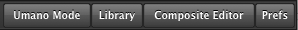
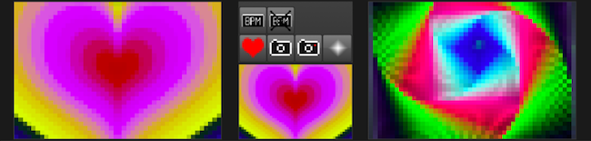
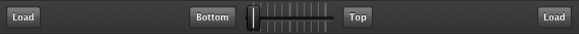
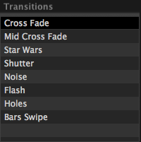
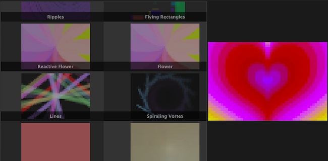

This guide will walk you through the various components of the Pixel Pusher user interface.
Modes

You can change to any of the four Pixel Pusher modes by clicking their respective button in the
top right corner of the app.
- Umano mode automates the selection and transition of animations.
- Library mode is the default mode and gives the most screen real-estate to the animation library.
- Composite Editor mode allows you to create and edit composite animations.
- Prefs mode allows you to view and modify settings for the Pixel Pusher. It's also where you can
find the user scripts and gifs folders.
Animation Previews
The Pixel Pusher borrows a concept from DJ software of having a "left" and "right". The Pixel Pusher
has a left and right animation which you can cross-fade between.

There are three animation windows here. The left and right are as you'd expect, while the center is
what will be displayed on the Pixel Heart.
The buttons displayed above the Pixel Heart preview pane each perform a certain action when clicked.
- Shows Pixel Heart on top of whatever animations
are currently being shown on the Heart.
- Takes a screenshot of the Heart and saves it
as an image on your computer.
- Records an animated gif of whatever is being played on
the Heart.
- Fills the Heart with white, causing a strobe effect. The
strobe will be persisted while the button is held down and then it will fade away when the button
is released.
- When tapped to a specific rhythm it trains the heart
to predict beats. This can be useful for feeding certain animations with BPM information.
- Resets the tap BPM counter so that animations
using tap BPM won't get anymore information.
Playback Controls

The playback controls allow you to load animations into the left or right and to cross-fade between
them.
You can also change which animation is "above" the other by clicking the "bottom" and "top" buttons.
This is important for when you want one animation to be drawn on top of another while cross-fading.
Transitions

The transitions list lets you select what kind of transition you'll use when cross-fading between
two animations.
- Fade out the bottom animation while fading in
the top animation.
- Fade in the top animation first
before fading out the bottom animation.
- Fade in the theme of Star Wars' swiping
transition.
- Fade with multiple vertical shutters.
- Fade with noise.
- Fade with a flash to white.
- Fade with holes that move.
- Fade with bars that swipe around the
screen.
Animations
The animations list shows all of the animations that the Pixel Pusher can play. When you select an
animation in this list it shows a preview of the animation in the preview pane adjacent to the list.
When you click the Load buttons in the playback controls it is this selected animation that will be
loaded.

Next
Learn how to write Pixel Pusher scripts.
h